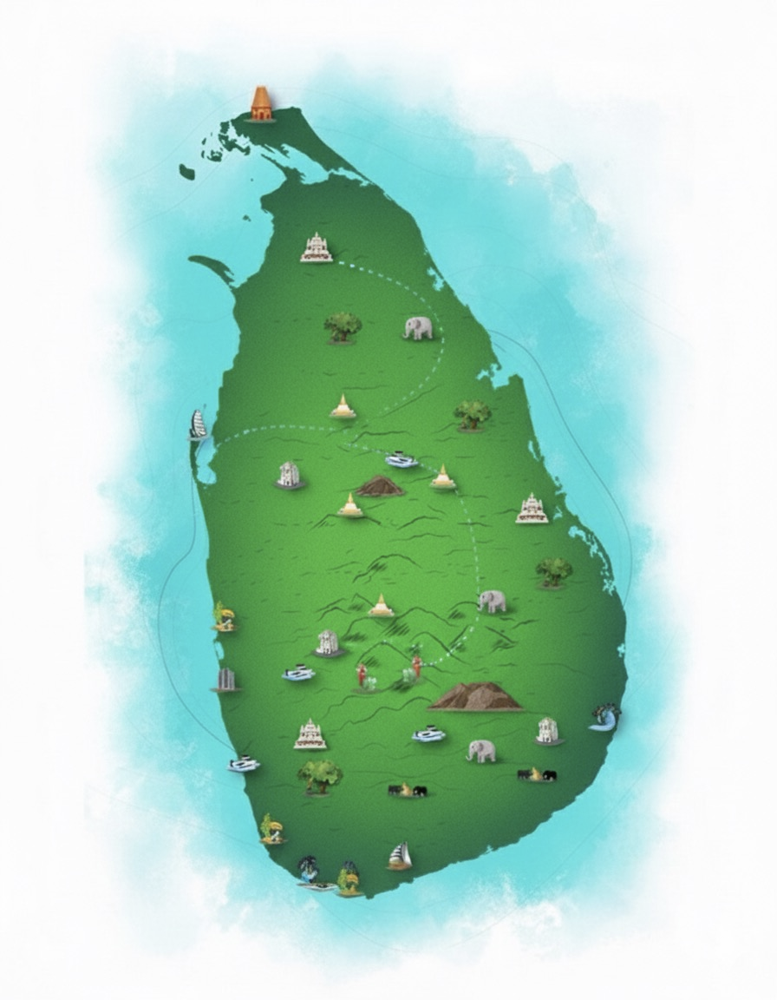

Discover Sri Lanka at a Glance
Explore beaches, culture, wildlife, hidden gems & more — all on one interactive map.

Kalpitiya
Bentota
Unawatuna
Weligama
Mirissa
Arugam Bay
Anuradhapura
Sigiriya
Polonnaruwa
Kandy
Colombo
Galle
Wilpattu
Minneriya
Gal Oya
Horton Plains
Sinharaja
Yala
Maduru Oya
Ranamure
Gammaduwa
Ella
Ratnapura
Polhena
Negombo
Mahiyanganaya
Pekoe Trail
Colombo
Galle
Kandy
Colombo
Arugam Bay
Mahiyanganaya
Ingiriya